Monthly AI-related sentence count
countMonthly number of AI-related matched sentences, separated by comments and posts.

Discussion volume, sentiment, subreddit characteristics, AI products, and mechanisms
Monthly number of AI-related matched sentences, separated by comments and posts.
Monthly mean VADER compound sentiment, separated by comments and posts.

Monthly shares of positive, neutral and negative AI-related sentences for comments and posts.

Subreddits with the largest number of unique AI-related posts and comments in 2022.

Annual number of unique AI-related posts and comments in each subreddit category.
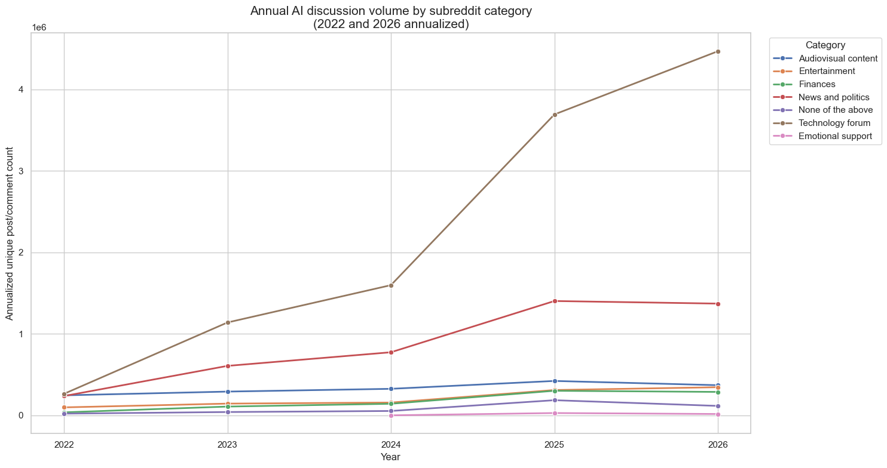
Annual AI discussion volume divided by the number of subreddits represented in each category.
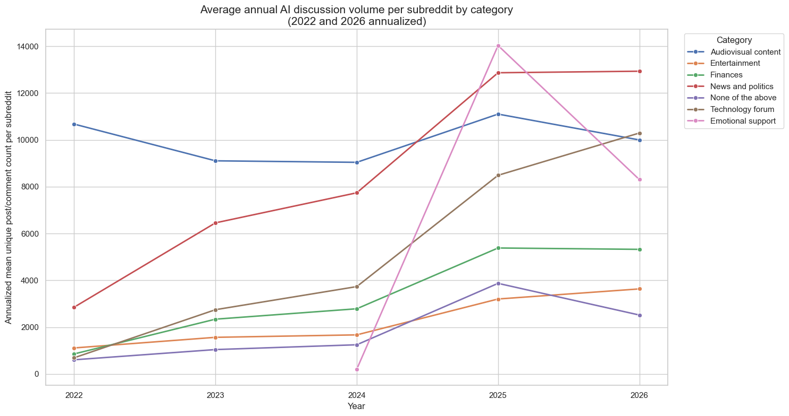
Annual mean VADER compound sentiment within each subreddit category.

Subreddit-level relationships between mean AI sentiment and age, gender, partisanship, affluence, subreddit size and technology-user proportion.
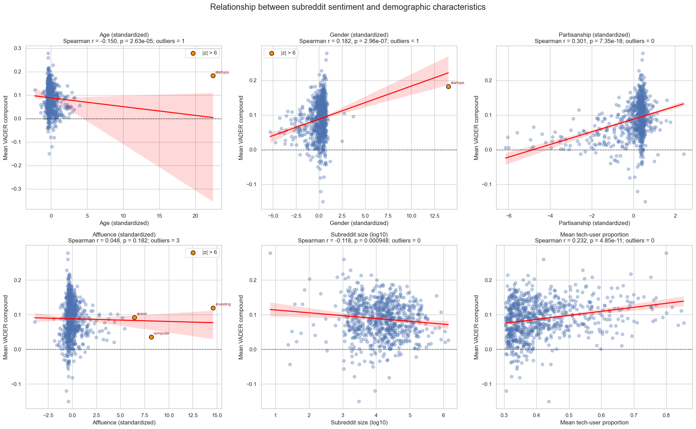
Subreddit-level demographic correlations after removing communities with absolute age gender or affluence z-scores above six.
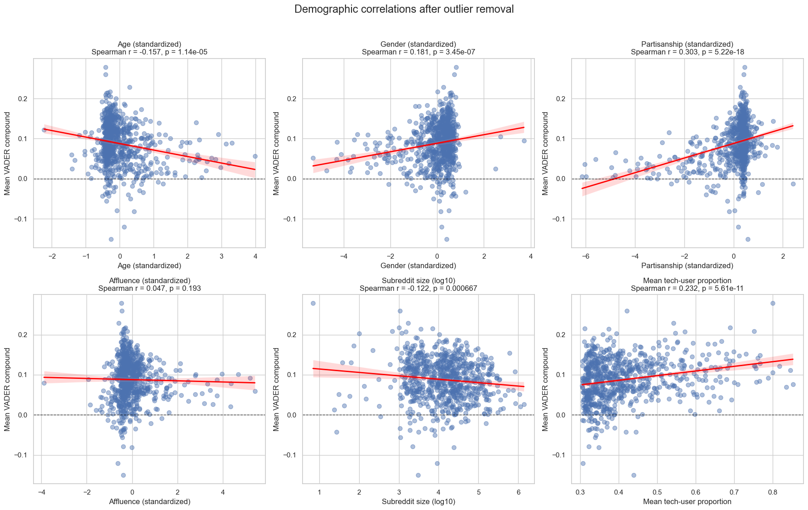
Separate LOWESS curves for communities with negative and positive standardized partisanship scores.
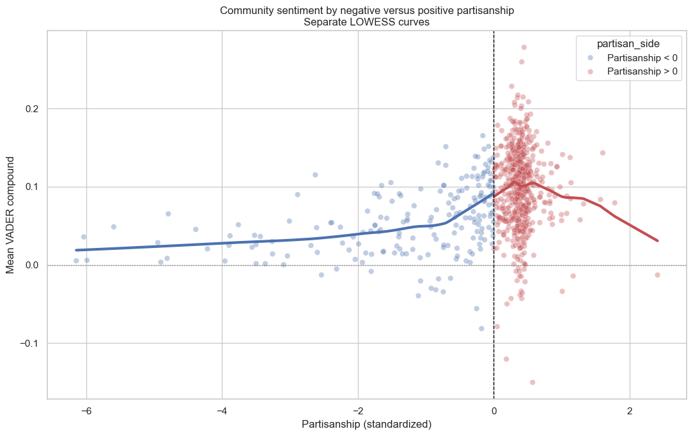
Relationship between logged unique AI discussion frequency and mean community VADER valence.
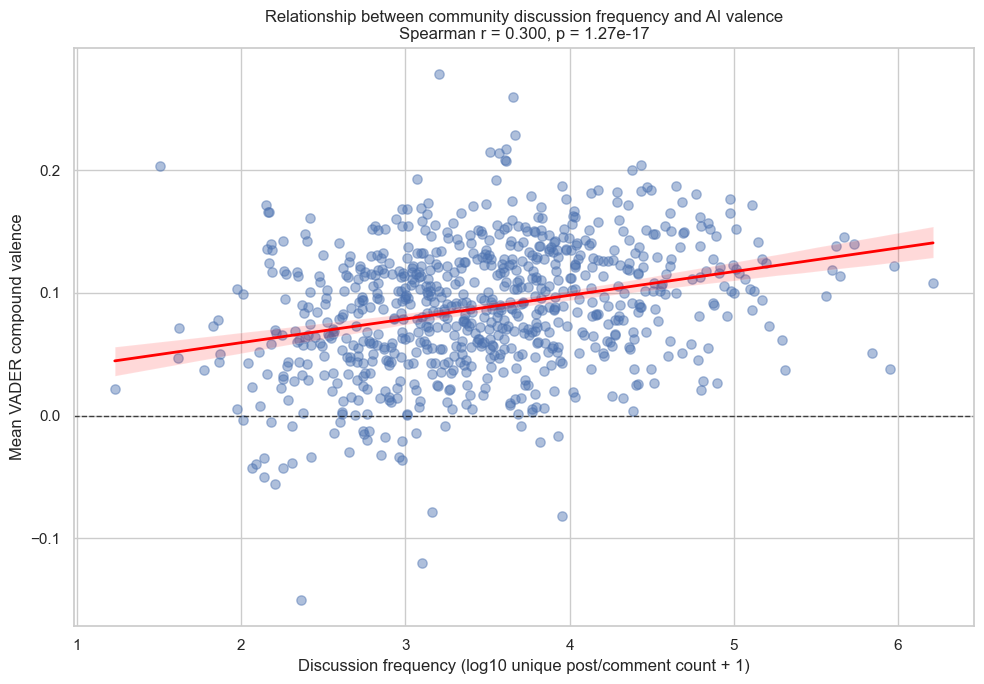
All Year Joint Regression Table
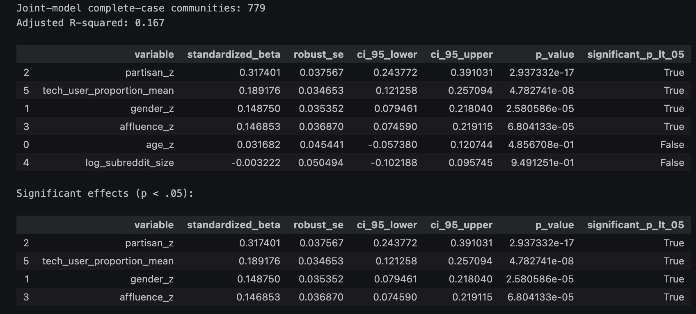
Year-separated relationships between community attributes and mean AI sentiment with fitted curves and correlations.
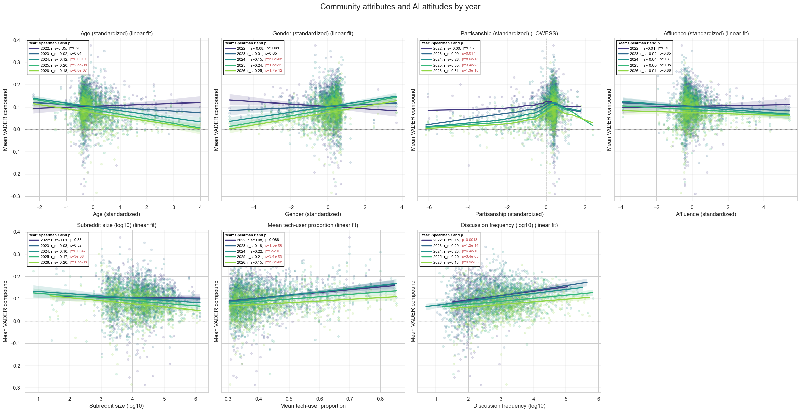
Year-specific standardized age coefficient with a 95 percent confidence interval from the joint regression.
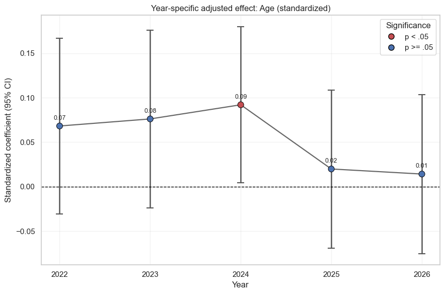
Monthly mean VADER compound sentiment for the most frequently discussed AI products.

Separate monthly sentiment panels for the most frequently discussed AI products.

Monthly mean VADER compound sentiment for sentences mentioning ChatGPT.

Monthly sentiment lines and engagement-share bars for new old and exiting users.
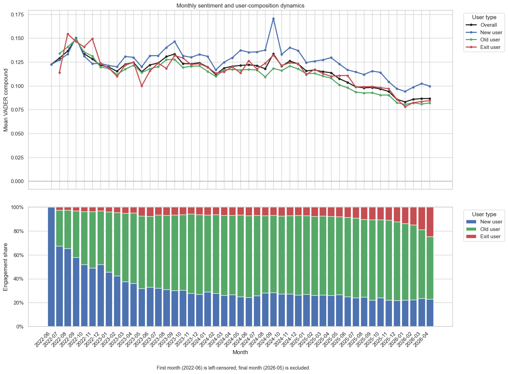
Annual sentiment and active-user counts separated by users' first observed discussion year.
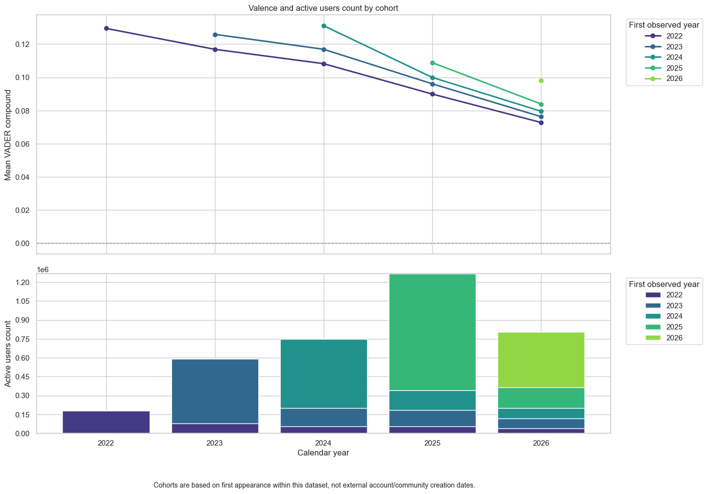
Monthly sentiment lines and engagement-share bars for new old and inactive communities.
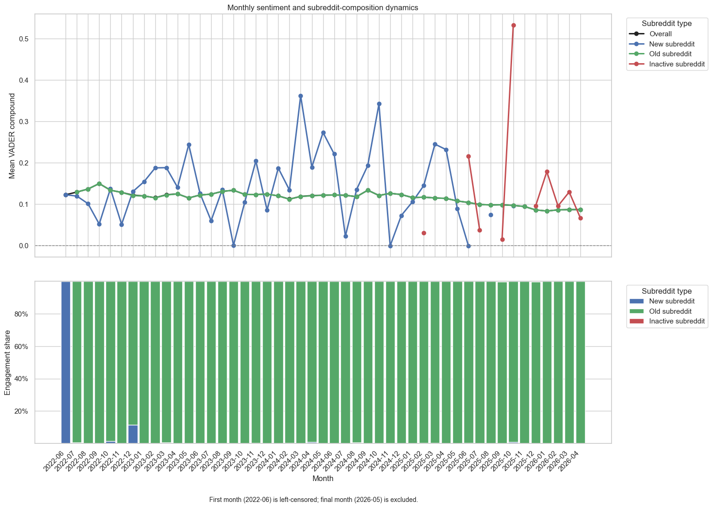
Annual sentiment and active-community counts separated by communities' first observed AI-discussion year.
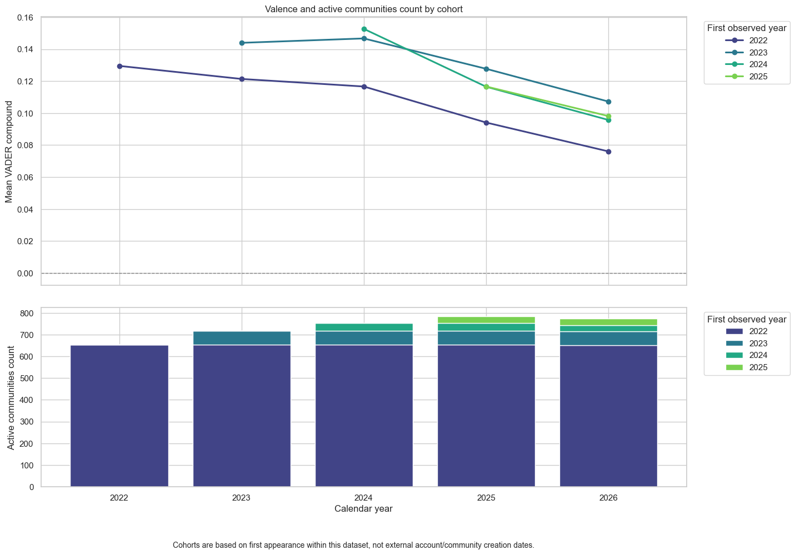
Mean VADER sentiment by GPT model version in release order; error bars represent one standard deviation.

Four-week volume-weighted GPT model-version sentiment trends with raw weekly means.

Annual change in overall product sentiment from separate regressions controlling for model-version presence with HAC standard errors.

Weekly model-version sentiment trend within each product controlling for overall product sentiment and version-level differences.

GPT model-version sentiment-level differences relative to the product reference model controlling for overall sentiment and model week.

Version-specific weekly GPT sentiment slopes from the interaction model with HC3 confidence intervals.

Four-week volume-weighted GPT model-version sentiment trends split into pre-release release-week and post-release phases.

# Separate pre/post model-version trend regressions # Within each product: # mean_score ~ overall_mean + model_week + C(matched_model, Treatment(reference=...))

combined pre/post: add model_week × period and matched_model × period

combined pre/post: add model_week × period and matched_model × period

combined pre/post: add model_week × period and matched_model × period

combined pre/post: add model_week × period and matched_model × period

# Within each product: # mean_score ~ overall_mean + model_week + C(matched_model, Treatment(reference=...)) + C(release_period, Treatment(reference='post'))

# Within each product: # mean_score ~ overall_mean + model_week + C(matched_model, Treatment(reference=...)) + pre_release + matched_model × pre_release

Monthly average GoEmotions score for admiration, from June 2022 through May 2026.
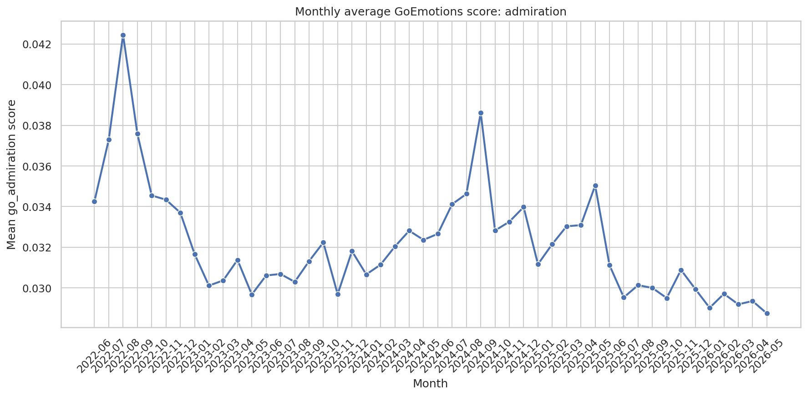
Pearson correlations among 48 monthly GoEmotions series; cluster labels show groups with similar trends.
Monthly mean, centered three-month rolling mean, and fitted linear trend by emotion and trend cluster.
Positive, negative, and ambiguous emotion trends on a shared y-axis.
Annual mean GoEmotions scores for the positive emotion group in Emotional support subreddits.
Annual mean GoEmotions scores for the negative emotion group in Emotional support subreddits.
Annual mean GoEmotions scores for the ambiguous emotion group in Emotional support subreddits.
Monthly number of retained control-sample posts and comments, shown separately by datatype.
Monthly mean full-body VADER compound sentiment for the control sample, shown separately for posts and comments.
Monthly negative, neutral and positive body-VADER shares, displayed separately for comments and posts.
Community-level relationships between mean body sentiment and age, gender, partisanship, affluence, subreddit size and discussion frequency, with linear fits and Spearman correlations.
Community sentiment across standardized partisanship, using separate LOWESS curves below and above zero after outlier removal.
Year-specific community relationships with body sentiment; partisanship uses LOWESS and the other characteristics use linear fits with 95 percent confidence intervals.
Monthly mean body sentiment and engagement composition for new, old and exiting users; the first month is left-censored and the final month is excluded.
Monthly number of control-sample person-matched sentences, separated into comments and posts.
Monthly mean body-level VADER compound sentiment for control-sample person matches, separated into comments and posts.
Monthly matched-sentence counts for up to 12 individuals; comments and posts are shown separately and y axes are independent.
Monthly mean body-level VADER compound sentiment for up to 12 individuals; comments and posts are shown separately on shared y axes.
Annualized matched-sentence volume and mean body VADER sentiment for all individuals; low-sample sentiment cells are masked.
Cross-year sentiment ranks for all individuals; rank 1 is the highest mean sentiment, asterisks flag low-sample estimates and gray cells indicate missing data.
Monthly non-AI tech-product matched-sentence volume by datatype and mean body sentiment by datatype, with pooled AI-discussion sentence sentiment as a benchmark.
Within-year ranking by mean sentiment. Tech products use body VADER and AI benchmarks use sentence VADER, so absolute levels are descriptive; AI names are orange and bold.
Non-AI tech products are shown as 2022–2026 period averages, while AI benchmarks follow year-by-year frequency and sentiment paths toward the latest observation.
Monthly matched-sentence counts for non-AI tech products, with comments and posts shown separately and independent y axes.
Monthly mean body-level VADER compound sentiment for non-AI tech products, with comments and posts shown separately on shared y axes.